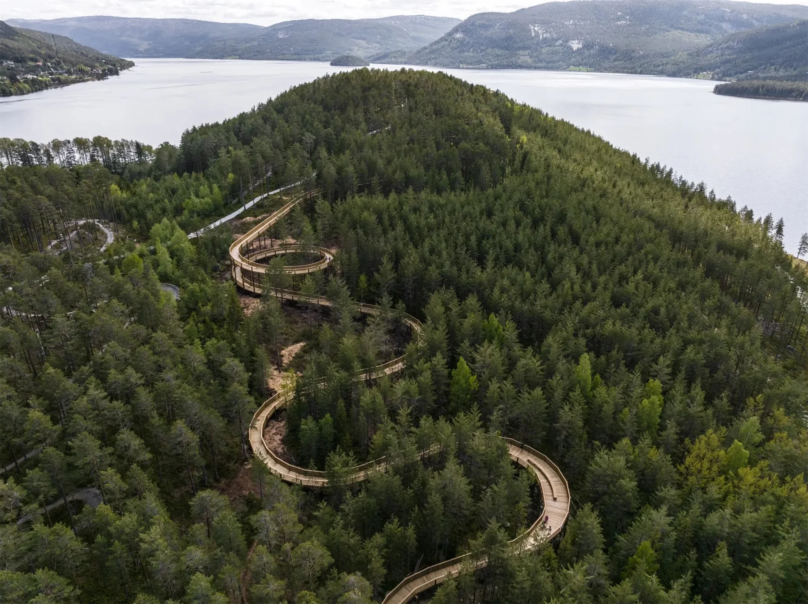

快速连接广州白云国际机场
5400亩规划总面积
约214万㎡规划总建筑面积
9湾多元健康生活场景
7星山岭主题驿站
01 · 区位大湾区北部
大湾区北部
健康生活新坐标
项目位于广州市花都区，临近广州白云国际机场与广州北站，连接大广高速、京港澳高速及规划轨道网络。
通达广州北站综合交通枢纽
高速、城际、地铁与城市道路共同构建便捷网络

总体愿景
七星福地
九湾同辉
标杆级全圈层活力大健康城
生态 · 全域生态绿网生命 · 未来健康疗养生活 · 全龄健康配套
七星寓意循北斗七星
循北斗七星
寄寓美好人生
七颗星分别承载长寿、智慧、财富、公正、权利与突破等美好寓意，并转化为山岭公园中的七个主题驿站。
01 · 天枢
寿星和财星
寓意健康长寿、福泽绵延，也象征丰盛安定的美好生活。
02 · 九湾九种场景
九种场景
共同回应健康生活
从医旅接待、生命科学到亲情乐学、艺术疗愈，九湾形成各具特色、彼此联动的健康生活体系。

空港迎宾湾
01
空港迎宾湾
接待、酒店、会展、客户中心与医旅服务，构建面向湾区与世界的健康门户。
03 · 核心场景为不同人生阶段
为不同人生阶段
定制健康生活
从荣誉康养、高知社区到企业家健康会客，提供兼顾私密、社群与持续照护的品质空间。

将军荣养湾
以三进院私密安保体系、荣誉服务与高品质院落生活，营造安静、从容、具有归属感的康养社区。
04 · 生态景观一座山岭公园
一座山岭公园
串联全龄健康日常
主题脊廊、无障碍健康环、登山步道与七个主题驿站，构成可漫步、可运动、可停留的生态健康网络。



05 · 项目价值健康产业与城市价值
健康产业与城市价值
在这里共同生长
通过医疗、康复、生命科学、康养服务与品质社区协同发展，形成面向未来的健康产业生态。
规划服务康养客群，形成全龄健康生活社区。
预计带动直接就业，促进健康产业人才集聚。
总体投资规模，持续完善城市健康基础设施。
综合经济拉动效应，激活区域产业与消费潜力。
让健康成为
一座城市的日常
广州方大健康城 · 七星福地，九湾同辉
返回顶部